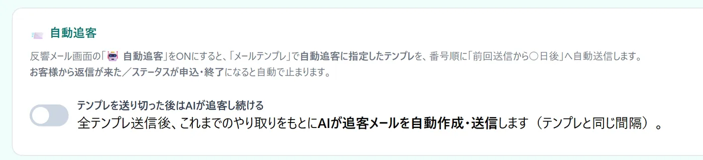

こんな困りごとに
- 反響への最初の返信が、忙しい時間帯に遅れてしまう
- 追客のメールが、2〜3通で止まってしまう
- 電話番号しか分からない反響に、連絡のしようがない
この機能でできること
- 新着の反響に、媒体ごとのテンプレートで自動返信
- テンプレートを送り切ったあとは、AIが追客メールを作って自動送信
- 電話番号がある反響に、SMSを自動送信（SMS送信オプション）
メニューの場所左メニュー「各種設定 › メール自動返信」
!一部の機能はオプションです
SMSの送信はオプションです。
ご利用の条件は、お気軽にお問い合わせください。
使い方（3ステップ）
-
1
自動返信をオンにする
左メニュー「各種設定 › メール自動返信」で「新着反響に自動返信する」をオンにします。「ポータル登録」で、媒体ごとに使うテンプレートを選べます（例：SUUMO用とHOME'S用で文面を分ける）。
-
2
AIの追客を用意する
追客に使うテンプレートの順番と間隔は「メールテンプレ」で決めます。「自動追客」で「テンプレを送り切った後はAIが追客し続ける」をオンにすると、送り切ったあとはAIが追客メールを作って送ります。追客は、反響管理表のメール画面で「🤖 自動追客」ボタンをオンにしたお客様に始まります（最初はオフ）。

-
3
SMSも自動で送る（オプション）
SMS送信オプションをご契約の場合は、「電話番号がある反響へSMSを自動送信する」をオンにします。送られるのは、メール自動取込で入った反響のうち、携帯番号があるお客様です。「メールを送れないお客様だけに送る」を選べば、メールアドレスが無い反響にだけ届きます。送った内容は、反響管理表のやり取りに残ります。
よくある質問
AIが書く追客メールは、送る前に確かめられますか？
確かめられます。「🔍 この設定で1通作ってみる」を押すと、AIが実際に1通書いて見せます。お客様には送られません（月のAI利用回数を1回ぶん使います）。
あいさつや署名は、毎回同じ文章にできますか？
できます。「AIが書くメールのひな型」に、あいさつや署名などいつも同じ文章をそのまま書き、AIに書いてほしい所にだけ {{AI:…}} の印を入れると、その部分だけをAIが書きます。印を1つも入れなければ、ひな型がそのまま送られます。